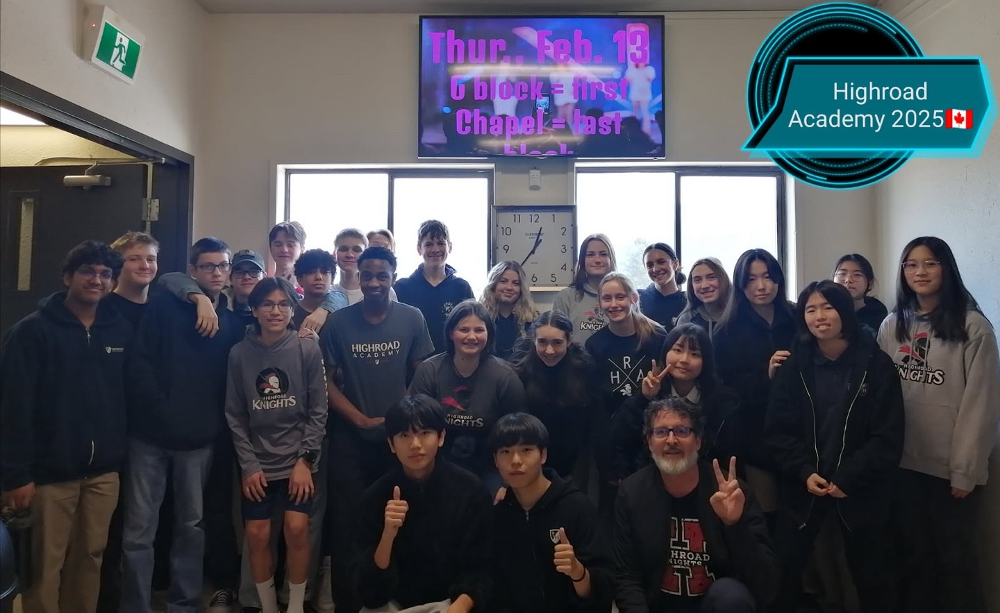

정보 업데이트 2026.08.30 · 2026–27 학년도 프로그램 비용 및 운영 정보 기준
GUARDIAN PROGRAM
가디언형 유학이란? 관리형과 무엇이 다른가
캐나다 홈스테이 가정에서 생활하며, 캐나다 내 커스터디언·가디언 역할을 맡는 현지 담당자의 지원을 받는 Grade 8~11 대상 프로그램입니다.
👤 Grade 8~11🏡 홈스테이 + 가디언🗓 장기(6개월 이상)💰 연 CA$37,450~48,775
같은 지역의 표시 총액을 비교하면 가디언형이 관리형보다 약 1,600만~2,120만 원 낮습니다. 대신 방과후 수업·등하교 차량·저녁 학습 프로그램 등 포함 서비스가 다릅니다 — 이 차이를 정확히 이해하는 것이 선택의 출발점입니다.
STUDENT LIFE
학교생활까지 연결되는 현지 지원가디언형은 학생의 자립을 전제로 정착·학교·응급 상황을 지원합니다
캐나다 학교의 학생 활동 환경 · 에듀스마트 제공

하이로드 아카데미 학생 활동 · 에듀스마트 제공
VIDEO
영상으로 먼저 확인하세요에듀스마트 공식 소개 영상
▲ 에듀스마트 공식 소개 영상
WHAT IS A GUARDIAN
가디언은 정확히 무엇을 하는 사람인가요?
6개월을 넘는 과정은 일반적으로 학습허가서가 필요합니다. 부모·법정대리인 없이 오는 17세 미만 학생은 캐나다 내 커스터디언 지정이 필요하고, 17세부터 해당 주의 성년 연령 전까지는 심사관이 요구할 수 있습니다. 커스터디언은 보통 학생과 가까운 곳에 거주하는 성인 캐나다 시민권자 또는 영주권자가 맡으며, 학교·병원·행정 절차와 비상 상황에서 보호자 연락을 지원합니다.
💡 연령과 동반 여부에 따라 요건이 달라집니다. 특히 부모 없이 오는 17세 미만 학생은 커스터디언 서류를 준비해야 합니다. 프로그램 선택의 차이는 커스터디언 유무보다 방과후 수업·통학·저녁 학습과 생활관리까지 포함할 것인지에 있습니다.
SERVICE SCOPE
가디언형 상세 서비스 4단계
01
BEFORE ARRIVAL
입국 전 서비스
가디언 위임 서류 발급 및 비자 신청용 서류 전달 · 온라인 사전 오리엔테이션
홈스테이 배정 및 안내 · 학생·보호자와 가디언 간 연락 체계 구축
02
SETTLEMENT
초기 정착 서비스 (입국 직후)
공항 픽업 및 홈스테이 체크인 동행
대중교통 이용법·은행 계좌 개설·생활 필수품 구매 지원 · 캐나다 생활 안내
03
ACADEMIC
학교 등록 및 학업 관리
교육청·학교 등록 절차 동행 · 영어 레벨 테스트 안내 및 응시 지원 · 상담 교사와의 코스 선택 미팅 조율
성적표 및 주요 학사 정보 전달 · 학업 상담 및 진학 가이드 · 멘토링은 별도 비용으로 추가 지원
04
DAILY LIFE
생활 관리 서비스
홈스테이 생활 관리 및 가정과의 소통 · 응급 상황 시 병원 동행 및 보호자 공지
의료기관 안내 및 예약 지원 · 학생비자 연장 서비스(추가 비용 발생 가능)
GUARDIAN VS SUPERVISED
가디언형 vs 관리형, 정면 비교
항목
가디언형
관리형
연간 비용
CA$37,450~48,775
CA$58,500~80,700 골프 과정 제외
숙소
홈스테이
홈스테이 또는 기숙사
방과후 학원 수업
✕ 없음 (멘토링 별도 신청)
◎ 주 4~5회 포함
등하교 차량
✕ 없음 (코퀴틀람만 아침 라이드)
◎ 포함
저녁 학습 프로그램
✕ 없음
◎ 기숙사형은 매일 운영
공항 픽업·정착 지원
◎ 포함
◎ 포함
학교 등록·성적 전달
◎ 포함
◎ 포함
응급·병원 동행
◎ 포함
◎ 포함
입시 컨설팅
△ 별도 (G10~11 $4,500 / G12 $5,500)
◎ G11·12 기본 포함
적합한 학생
스스로 공부하는 습관이 잡힌 학생
학습·생활을 잡아줘야 하는 학생
💡 핵심은 "자기주도 학습이 되는가"입니다. 같은 지역의 표시 총액은 가디언형이 약 1,600만~2,120만 원 낮지만, 방과후 수업·라이드·입시관리 등이 빠집니다. 필요한 보충수업 비용까지 더해 판단해야 합니다.
●환율: 2026년 8월 기준 CAD/KRW 약 1,000원 적용, 환전 시점에 따라 변동 가능
●공통 불포함: 의료비·약값·치과·안경 등 건강 관련 비용, 학생비자 연장비, 대학 지원 컨설팅비, 교통비, 외부 액티비티 참가비, 시험 응시료, 각 교육청 원서 지원비
●추가 멘토링·상담 및 개별 특별 요청은 별도 비용이 발생할 수 있습니다
MENTORING
입시 멘토링은 별도 상품입니다가디언형에는 포함되지 않습니다
가디언형에서 제공되는 학업 지원은 성적표 전달, 코스 선택 미팅 조율, 진학 가이드 수준입니다. 실제 입시 전략 수립과 원서 작성까지 원하신다면 에듀스마트 멘토링 프로그램을 별도로 신청해야 합니다.
G10 ~ G11
학업 컨설팅
CA$4,500
약 450만 원 · 9~6월 또는 1~12월
G12
학업/입시 컨설팅 (대학원서 대행 기본 4개 포함)
CA$5,500
약 550만 원 · 9~6월 또는 1~12월
💡 실질 비용 계산법 — G11 학생이 가디언형(랭리 $38,250)에 멘토링($4,500)을 붙이면 $42,750입니다. 같은 랭리 관리형은 $58,500이므로 표시 총액 기준 $15,750 차이가 납니다. 관리형에는 방과후 수업이 포함된다는 점도 함께 보셔야 합니다.
FAQ
학부모님이 자주 묻는 질문
Q1가디언형이면 아이를 그냥 방치하는 건 아닌가요?
아닙니다. 가디언은 학교 등록 동행, 성적표 전달, 홈스테이 가정과의 소통, 응급 시 병원 동행까지 책임집니다. 다만 매일 공부를 봐주지는 않습니다. 관리형이 '학원 + 기숙사 + 가디언' 패키지라면, 가디언형은 '홈스테이 + 가디언'입니다. 학습 관리는 학교와 아이 본인의 몫이라고 이해하시면 정확합니다.
Q2우리 아이는 가디언형이 맞을까요, 관리형이 맞을까요?
기준은 하나입니다. 한국에서 학원 없이 스스로 공부해 성적을 유지하고 있는가. 그렇다면 가디언형으로 충분하고, 아낀 비용으로 필요한 과목만 과외를 붙이는 편이 효율적입니다. 반대로 학원과 부모의 관리로 성적이 유지되던 학생이라면, 캐나다에서 그 구조가 사라졌을 때 성적이 무너집니다. 이 경우 관리형이 결과적으로 더 저렴합니다.
Q3가디언은 얼마나 자주 아이를 만나나요?
프로그램에 따라 다릅니다. 하이로드 아카데미는 학교에 유학생 전담 교사가 상주하고 월 1회 이상 정기 상담이 있어 접촉 빈도가 가장 높습니다. 공립 교육청 프로그램은 학사 일정 중심으로 관리되며, 필요할 때 연락하는 방식입니다. 접촉 빈도를 중시하신다면 하이로드나 관리형을 검토하세요.
Q4등하교는 어떻게 하나요?
가디언형에는 등하교 차량이 원칙적으로 포함되지 않습니다. 스쿨버스·대중교통·도보 또는 홈스테이 가정의 도움으로 해결합니다. 예외적으로 코퀴틀람 교육청 프로그램은 아침 라이드가 포함되어 있고, 하이로드 아카데미는 홈스테이 가정이 통학을 직접 담당합니다. 칠리왁 공립은 통학 버스 이용 시 별도 수수료가 붙을 수 있습니다.
Q5의료보험은 포함되나요?
프로그램마다 다릅니다. 칠리왁 공립교육청은 프로그램 비용에 수업료와 학생 의료보험이 모두 포함됩니다. 반면 하이로드 아카데미는 의료보험을 별도로 가입해야 하고, 버나비·랭리·코퀴틀람 프로그램은 의료비·약값·치과·안경 비용이 불포함으로 명시되어 있습니다. 어느 경우든 치과·안경·처방약은 대체로 본인 부담이니 민간 보조보험을 고려하세요.
Q6어느 지역이 영어 몰입에 가장 좋은가요?
지역 통계만으로 학교별 한국 학생 수나 실제 영어 사용량을 단정할 수는 없습니다. 다만 하이로드는 에듀스마트 안내 기준 국제학생 3% 미만, 칠리왁은 2021 인구조사 기준 첫 공식 언어 영어 98.2%, 랭리 타운십은 97.1%로 영어 중심 환경입니다. 실제 선택 때에는 지원 학기의 학교별 국제학생·한국 학생 현황을 별도로 확인하세요.
Q7가디언형으로 시작했다가 관리형으로 바꿀 수 있나요?
같은 지역이라면 가능합니다. 에듀스마트가 버나비·랭리·코퀴틀람에서 두 형태를 모두 운영하므로, 학교를 유지한 채 관리 등급만 올리는 방식이 현실적입니다. 실제로 첫 학기를 가디언형으로 시작해 성적표를 받아본 뒤 필요한 만큼 멘토링이나 관리형으로 옮기는 사례가 있습니다. 다만 칠리왁·하이로드는 관리형이 운영되지 않아 지역 이동이 필요합니다.
Q8Grade 8부터인 이유가 뭔가요? 더 어린 아이는 안 되나요?
가디언형은 학생이 스스로 생활과 학습을 관리한다는 전제 위에 설계되어 있습니다. 초등 고학년~중1(G5~7)은 이 전제가 성립하기 어려워 가디언형을 권하지 않으며, 에듀스마트도 이 연령대는 기숙사 관리형(G5~7)으로만 운영합니다. 어린 자녀라면 그쪽을 검토하세요.
Q9비자와 커스터디언십 서류는 누가 준비하나요?
에듀스마트가 가디언 위임 서류를 발급하고 비자 신청용 서류를 전달합니다. 비자 신청 자체는 학생·보호자가 진행하거나 유학원이 대행합니다. 입국 후 비자 연장이 필요하면 학생비자 연장 서비스가 제공되지만 추가 비용이 발생할 수 있습니다. 서류 순서는 입학허가서 → 가디언 서류 공증 → 비자 신청입니다.
Q10결국 총비용은 얼마나 잡아야 하나요?
표기 학비에 연 500만~1,000만 원을 더해 잡으시는 것이 현실적입니다. 왕복 항공료, 여름방학 숙식(현지 잔류 시), 용돈, 교통비, 통신비, 시험 응시료, 개인 액티비티, 의료비가 모두 별도이기 때문입니다. 여기에 멘토링($4,500~5,500)이나 1:1 과외(시간당 $60~80)를 추가하면 더 늘어납니다. 랭리 가디언형 기준으로 실제 연간 지출은 5,000만 원 안팎을 예상하시면 무리가 없습니다.